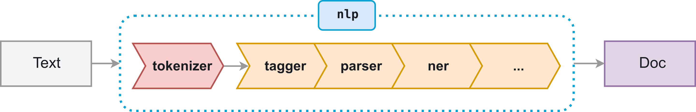

2. Text Annotation with spaCy#
This chapter introduces the general field of natural language processing, or NLP. While NLP is often used interchangeably with text mining/analytics in introductory settings, the former differs in important ways from many of the core methods in the latter. We will highlight a few such differences over the course of this session, and then more generally throughout the workshop series as a whole.
Learning objectives
By the end of this chapter, you will be able to:
Explain how document annotation differs from other representations of text data
Know how
spaCymodels and their respective pipelines workExtract linguistic information about text using
spaCyDescribe key terms in NLP, like part-of-speech tagging, dependency parsing, etc.
Know how/where to look for more information about the linguistic data
spaCymakes available
2.1. NLP vs. Text Mining: In Brief#
2.1.1. Data structures#
One way to distinguish NLP from text mining has has to do with the various data structures we use in the former. Generally speaking, NLP methods are maximally preservative when it comes to representing textual information in a way computers can read. Unlike text mining’s atomizing focus on bags of words, in NLP we often use literal transcriptions of the input text and run our analyses directly on that. This is because much of the information NLP methods provide is context-sensitive: we need to know, for example, the subject of a sentence in order to do dependency parsing; part-of-speech taggers are most effective when they have surrounding tokens to consider. Accordingly, our workflow needs to retain as much information about our documents as possible, for as long as possible. In fact, many NLP methods build on each other, so data about our documents will grow over the course of processing them (rather than getting pared down, as with text mining). The dominant paradigm, then, for thinking about how text data is represented in NLP is annotation: NLP tends to add, associate, or tag documents with extra information.
2.1.2. Model-driven methods#
The other key difference between text mining and NLP lies in the way the latter tends to be more model-driven. NLP methods often rely on statistical models to create the above information, and ultimately these models have a lot of assumptions baked into them. Such assumptions range from philosophy of language (how do we know we’re analyzing meaning?) to the kind of training data on which they’re trained (what does the model represent, and what biases might thereby be involved?). Of course, it’s possible to build your own models, and indeed a later chapter will show you how to do so, but you’ll often find yourself using other researchers’ models when doing NLP work. It’s thus very important to know how researchers have built their models so you can do your own work responsibly.
2.2. spaCy Language Models#
2.2.1. spaCy pipelines#
Much of this workshop series will use language models from spaCy, a very
popular NLP library for Python. In essence, a spaCy model is a collection of
sub-models arranged into a pipeline. The idea here is that you send a
document through this pipeline, and the model does the work of annotating your
document. Once it has finished, you can access these annotations to perform
whatever analysis you’d like to do.

Every component, or pipe, in a spaCy pipeline performs a different task,
from tokenization to part-of-speech tagging and named-entity recognition. Each
model comes with a specific ordering of these tasks, but you can mix and match
them after the fact.
2.2.2. Downloading a model#
The specific model we’ll be using is spaCy’s medium-sized English model:
en_core_web_md. It’s been trained on the OntoNotes corpus and
it features several useful pipes, which we’ll discuss below.
If you haven’t used spaCy before, you’ll need to download this model. You can
do so by running the following in a command line interface:
python -m spacy download en_core_web_md
2.3. Preliminaries#
Once your model has downloaded, it’s time to set up an environment. Here are the libraries you’ll need for this chapter.
from pathlib import Path
from collections import Counter, defaultdict
from tabulate import tabulate
import spacy
And here’s the data directory we’ll be working from:
indir = Path("data/session_one")
Finally, we initialize the model.
nlp = spacy.load('en_core_web_md')
2.4. Annotations#
To annotate a document with the model, simply pass it to the model. We’ll use a short poem by Gertrude Stein to show this.
with indir.joinpath("stein_carafe.txt").open('r') as fin:
poem = fin.read()
carafe = nlp(poem)
With this done, we inspect the result…
carafe
A kind in glass and a cousin, a spectacle and nothing strange a single hurt color and an arrangement in a system to pointing. All this and not ordinary, not unordered in not resembling. The difference is spreading.
…which seems to be no different from a string representation! This output is misleading, however. Our annotated poem now has a tone of extra information associated it, which is accessible via attributes and methods.
attributes = [i for i in dir(carafe) if i.startswith("_") == False]
print("Number of attributes in a spaCy doc:", len(attributes))
Number of attributes in a spaCy doc: 52
This high number of attributes indicates an important point to keep in mind
when working with spaCy and NLP generally: as we mentioned before, the
primary data model for NLP aims to maximally preserve information about
your document. It keeps documents intact and in fact adds much more information
about them than Python’s base string methods have. In this sense, we might say
that spaCy is additive in nature, whereas text mining methods are
subtractive, or reductive.
2.4.1. Document annotations#
spaCy annotations apply to either documents or individual tokens. Here are
some document-level annotations:
annotations = {'Sentences': 'SENT_START', 'Dependencies': 'DEP', 'TAGS': 'TAG'}
for annotation, tag in annotations.items():
print(f"{annotation:<12} {carafe.has_annotation(tag)}")
Sentences True
Dependencies True
TAGS True
Let’s look at sentences, which we access with .sents.
carafe.sents
<generator at 0x117091ea0>
…with a slight hitch: this returns a generator, not a list. spaCy aims to
be memory efficient (especially important for big corpora), so many of its
annotations are stored this way. We’ll need to iterate through this generator
to see its contents.
for sent in carafe.sents:
print(sent.text)
A kind in glass and a cousin, a spectacle and nothing strange a single hurt color and an arrangement in a system to pointing.
All this and not ordinary, not unordered in not resembling.
The difference is spreading.
One very useful attribute is .noun_chunks. It returns nouns and compound
nouns in a document.
for chunk in carafe.noun_chunks:
print(chunk)
A kind
glass
a cousin
a spectacle
nothing
a single hurt color
an arrangement
a system
All this
The difference
See how this picks up not only nouns, but articles and compound information? Articles could be helpful if you wanted to track singular/plural relationships, while compound nouns might tell you something about the way a document refers to the entities therein. The latter could have repeating patterns, and you might imagine how you could use noun chunks to create and count n-gram tokens and feed that into a classifier.
Consider this example from The Odyssey. Homer used many epithets and
repeating phrases throughout his epic. According to some theories, these act as
mnemonic devices, helping a performer keep everything in their head during an
oral performance (the poem wasn’t written down in Homer’s day). Using
.noun_chunks in conjunction with a Python Counter, we may be able to
identify these in Homer’s text. Below, we’ll do so with The Odyssey Book XI.
First, let’s load and model the text.
with indir.joinpath("odyssey_book_11.txt").open('r') as fin:
book11 = fin.read()
odyssey = nlp(book11)
Now we pass our noun chunks to the Counter. Be sure to grab only the .text
attribute from each token. We’ll explain why shortly.
counts = Counter([chunk.text for chunk in odyssey.noun_chunks])
With that done, let’s look for repeating noun chunks with three or more words.
repeats = []
for chunk, count in counts.items():
length = len(chunk.split())
if length > 2 and count > 1:
repeats.append([chunk, length])
print(tabulate(repeats, ['Chunk', 'Length']))
Chunk Length
------------------------ --------
the sea shore 3
a fair wind 3
the poor feckless ghosts 4
the same time 3
the other side 3
his golden sceptre 3
your own house 3
her own son 3
the Achaean land 3
her own husband 3
my wicked wife 3
all the Danaans 3
the poor creature 3
Another way to look at entities of this sort is with .ents. spaCy uses
named-entity recognition (NER) to extract significant objects, or entities,
in a document. In general, anything that has a proper name associated with it
is likely to be an entity, but things like expressions of time and geographic
location are also often tagged.
for i in range(5):
print(odyssey.ents[i])
Circe
Oceanus
Cimmerians
one
Oceanus
Entities come with labels that differentiate what kind of entity they are.
Using the .label_ attribute, we extract temporal entities in Book XI.
"; ".join(e.text for e in odyssey.ents if e.label_ == 'TIME')
'both night; all night; morning'
And here is a unique list of all the people
set(e.text for e in odyssey.ents if e.label_ == 'PERSON')
{'Achilles',
'Ajax',
'Antiope',
'Ariadne',
'Cassandra',
'Creon',
'Dia',
'Diana',
'Echeneus',
'Epeus',
'Epicaste',
'Eriphyle',
'Eurypylus',
'Gorgon',
'Hebe',
'Helen',
'Hercules',
'Iasus',
'Jove',
'King Alcinous',
'Leda',
'Leto',
'Maera',
'Minos',
'Neleus',
'Neoptolemus',
'O Phaecians',
'Orestes',
'Ossa',
'Panopeus',
'Peleus',
'Pelias',
'Periclymenus',
'Pero',
'Phaedra',
'Phylace',
'Priam',
'Proserpine',
'Pylos',
'Pytho',
'Queen',
'Salmoneus',
'Scyros',
'Sisyphus',
'Teiresias',
'Telamon',
'Telemachus',
'Theban Teiresias',
'Thetis',
'Troy',
'Tyro',
'Ulysses'}
Don’t see an entity that you know to be in your document? You can add more to
the spaCy model. Doing so is beyond the scope of our workshop session, but
the library’s EntityRuler() documentation will show you how.
2.4.2. Token annotations#
In addition to storing all of this information about documents, spaCy creates
a substantial amount of annotations for every token in a document. The same
logic as above applies to accessing this information.
Let’s return to the Stein poem. Indexing it will return individual tokens.
carafe[3]
glass
A token’s attributes and methods range from simple booleans, like whether a token is an alphabetic character:
carafe[3].is_alpha
True
…or whether it is a stop word:
carafe[3].is_stop
False
…to more complex pieces of information, like tracing back to the sentence in which this token appears:
carafe[3].sent
A kind in glass and a cousin, a spectacle and nothing strange a single hurt color and an arrangement in a system to pointing.
…or the token’s vector representation (more on this in the third session):
carafe[3].vector
array([-2.375 , -4.6198 , -3.2252 , 3.8549 , -0.038654, -5.3678 ,
3.1497 , 5.764 , 0.19113 , 1.7685 , 5.8596 , -1.6302 ,
-2.8097 , -1.2745 , 1.937 , -1.9711 , 0.82933 , 0.13711 ,
5.9818 , -2.1468 , 3.0062 , 1.5146 , 1.0455 , -1.6433 ,
-5.714 , -3.2725 , -7.9325 , -1.5346 , 1.6383 , -0.38003 ,
0.3552 , -5.9469 , 4.5539 , -1.2032 , 0.66832 , 0.74726 ,
-0.17968 , 2.0502 , 3.0344 , 0.55895 , 1.0194 , -7.562 ,
1.3125 , 1.002 , 1.7906 , 1.8453 , 2.9978 , -2.7806 ,
3.1258 , 2.3834 , 3.1675 , 3.2206 , 2.3995 , -2.3102 ,
-4.7973 , 4.1421 , 3.5867 , -2.0717 , 1.9329 , 4.7482 ,
1.0141 , -3.5112 , -1.5582 , -2.9616 , -4.4105 , -0.79301 ,
-3.3079 , -1.0187 , 2.9166 , -0.03589 , -0.48378 , -0.10681 ,
-2.1924 , 4.543 , -0.89629 , -2.554 , -1.0931 , -3.2937 ,
-1.5559 , -2.248 , 1.5028 , -0.56177 , 4.9519 , -5.1972 ,
4.0128 , -0.5309 , 2.8961 , 0.4134 , -4.5235 , -1.6513 ,
-4.3762 , 3.5658 , 1.4299 , -6.1665 , 3.2851 , -4.8415 ,
4.8492 , -2.0114 , 0.48911 , 1.2261 , -5.114 , -2.2333 ,
1.8823 , -4.2833 , 7.3651 , -0.79045 , -0.67217 , -4.5771 ,
2.7402 , 2.1193 , -3.2789 , -1.0388 , 2.5737 , -2.5655 ,
1.2905 , 1.9414 , 5.8181 , -2.0797 , -0.13823 , -0.63757 ,
-4.3091 , -4.0641 , -1.7641 , 6.1505 , 0.479 , -3.3209 ,
-0.92649 , -4.0634 , 9.5734 , -2.6268 , -6.0084 , 2.0715 ,
7.7494 , -3.1998 , -5.1168 , -5.4073 , 3.4898 , -3.068 ,
-0.22946 , 2.7993 , 0.62587 , 5.1366 , -4.2662 , -4.8456 ,
3.6147 , 2.196 , -3.3093 , 2.9666 , 3.9719 , -0.6797 ,
0.68821 , 0.71232 , -3.333 , 0.29148 , -0.39584 , 0.42873 ,
6.4946 , -0.823 , -0.020651, -2.7477 , -2.6581 , 3.1154 ,
4.6083 , -0.25886 , 4.4504 , 1.9561 , -1.6606 , -1.2628 ,
1.808 , -2.4556 , -2.2795 , -1.5849 , 0.82376 , 1.7998 ,
-5.5956 , 3.03 , -0.099104, -2.6838 , -1.5193 , -3.0473 ,
-1.7901 , -3.6805 , 0.46672 , -2.4157 , -3.5586 , -2.2314 ,
3.0696 , -1.6802 , -3.1026 , 1.6336 , 0.11814 , -0.38136 ,
-1.0735 , -0.41647 , -0.33304 , 4.421 , -0.33598 , -0.11295 ,
2.7921 , -1.2169 , 6.9349 , -5.8916 , 1.3116 , 2.5849 ,
-2.3761 , -1.9785 , -0.16168 , 5.3954 , 3.486 , -1.4455 ,
2.4938 , 3.6603 , 2.8105 , 3.5898 , -0.027119, -0.4058 ,
1.0381 , 2.0197 , -8.8603 , 0.93775 , 1.4575 , 2.1531 ,
-1.1737 , -2.0585 , -1.904 , -3.7927 , 2.4029 , 5.7362 ,
-0.17973 , -1.7102 , -1.7022 , 0.012114, 3.8014 , -4.9803 ,
-1.8146 , 0.27379 , -1.8618 , 1.1915 , 2.8944 , 2.4326 ,
-0.047042, 4.4882 , 3.6984 , 4.3737 , 1.9543 , -4.9321 ,
-2.9894 , 5.1766 , 1.9559 , -0.71326 , -2.1107 , 4.4851 ,
-0.40627 , -2.2319 , 1.1195 , -3.6748 , -0.69771 , 3.9417 ,
-3.5574 , -3.2113 , 0.16818 , 4.9451 , 0.21031 , -1.7497 ,
4.2453 , -1.7539 , -0.25824 , 4.7119 , -6.0458 , -1.823 ,
4.9671 , 0.56035 , -2.061 , -2.0699 , -5.2793 , -3.4587 ,
-2.1138 , 3.0765 , -0.2651 , -1.373 , -1.6493 , 3.4943 ,
4.5286 , 1.7202 , 3.2332 , 1.4228 , -4.3931 , -0.198 ,
-1.1396 , 2.7613 , 1.0529 , 0.082944, 3.6753 , 1.901 ,
-3.4038 , -2.3816 , 0.72765 , 3.7799 , 1.6928 , -3.4926 ],
dtype=float32)
Here’s a listing of some attributes that are relevant for text mining:
attributes = [[tok.text, tok.is_punct, tok.like_url] for tok in carafe]
print(tabulate(attributes, ['Text', 'Is punctuation', 'Is a URL']))
Text Is punctuation Is a URL
----------- ---------------- ----------
A False False
kind False False
in False False
glass False False
and False False
a False False
cousin False False
, True False
a False False
spectacle False False
and False False
nothing False False
strange False False
a False False
single False False
hurt False False
color False False
and False False
an False False
arrangement False False
in False False
a False False
system False False
to False False
pointing False False
. True False
All False False
this False False
and False False
not False False
ordinary False False
, True False
not False False
unordered False False
in False False
not False False
resembling False False
. True False
The False False
difference False False
is False False
spreading False False
. True False
We’ll discuss some of the more complex annotations later on, both in this
session and others. For now, let’s collect some simple information about each
of the tokens in our document. We’ll use list comprehension to do so. We’ll
also use the .text attribute for each token, since we only want the text
representation. Otherwise, we’d be creating a list of generators, where each
generator has all those attribute for every token! (This is why we made sure to
only use .text in our work with The Odyssey above.)
words = ' '.join(tok.text for tok in carafe if tok.is_alpha)
punct = ' '.join(tok.text for tok in carafe if tok.is_punct)
print("Words:", words)
print("Punctuation:", punct)
Words: A kind in glass and a cousin a spectacle and nothing strange a single hurt color and an arrangement in a system to pointing All this and not ordinary not unordered in not resembling The difference is spreading
Punctuation: , . , . .
Want some linguistic information? We can get that too. For example, here are lemmas:
lemmas = [[tok.text, tok.lemma_] for tok in carafe]
print(tabulate(lemmas, ['Token', 'Lemma']))
Token Lemma
----------- -----------
A a
kind kind
in in
glass glass
and and
a a
cousin cousin
, ,
a a
spectacle spectacle
and and
nothing nothing
strange strange
a a
single single
hurt hurt
color color
and and
an an
arrangement arrangement
in in
a a
system system
to to
pointing point
. .
All all
this this
and and
not not
ordinary ordinary
, ,
not not
unordered unordered
in in
not not
resembling resemble
. .
The the
difference difference
is be
spreading spread
. .
With such attributes at your disposal, you might imagine how you could work
spaCy into a text mining pipeline. Instead of using separate functions to
clean your corpus, those steps could all be accomplished by accessing
attributes.
But before you do this, you should consider 1) whether the increased
computational/memory overhead is worthwhile for your project; and 2) whether
spaCy’s base models will work for the kind of text you’re using. This second
point is especially important. While spaCy’s base models are incredibly
powerful, they are built for general purpose applications and may struggle with
domain-specific language. Medical text and early modern print are two such
examples of where the base models interpret your documents in unexpected ways,
thereby complicating, maybe even ruining, parts of a text mining pipeline that
relies on them.
That all said, there are ways to train your own spaCy model on a specific
domain. This can be an extensive process, one which exceeds the limits of our
short workshop, but if you want to learn more about doing so, you can visit
this page. There are also third party models available,
which you might find useful, though your mileage may vary.
2.5. Part-of-Speech Tagging#
One of the most common tasks in NLP involves assigning part-of-speech, or POS, tags to each token in a document. As we saw in the text mining series, these tags are a necessary step for certain text cleaning process, like lemmatization; you might also use them to identify subsets of your data, which you could separate out and model. Beyond text cleaning, POS tags can be useful for tasks like word sense disambiguation, where you try to determine which particular facet of meaning a given token represents.
Regardless of the task, the process of getting POS tags from spaCy will be
the same. Each token in a document has an associated tag, which is accessible
as an attribute.
pos_tags = [[tok.text, tok.pos_] for tok in carafe]
print(tabulate(pos_tags, ['Token', 'Tag']))
Token Tag
----------- -----
A DET
kind NOUN
in ADP
glass NOUN
and CCONJ
a DET
cousin NOUN
, PUNCT
a DET
spectacle NOUN
and CCONJ
nothing PRON
strange ADJ
a DET
single ADJ
hurt NOUN
color NOUN
and CCONJ
an DET
arrangement NOUN
in ADP
a DET
system NOUN
to ADP
pointing VERB
. PUNCT
All DET
this PRON
and CCONJ
not PART
ordinary ADJ
, PUNCT
not PART
unordered ADJ
in ADP
not PART
resembling VERB
. PUNCT
The DET
difference NOUN
is AUX
spreading VERB
. PUNCT
If you don’t know what a tag means, use spacy.explain().
spacy.explain('CCONJ')
'coordinating conjunction'
spaCy actually has two types of POS tags. The ones accessible with the
.pos_ attribute are the basic tags, whereas those under .tag_ are more
detailed (these come from the Penn Treebank project).
treebank = [[tok.text, tok.tag_, spacy.explain(tok.tag_)] for tok in carafe]
print(tabulate(treebank, ['Token', 'Tag', 'Explanation']))
Token Tag Explanation
----------- ----- --------------------------------------------------
A DT determiner
kind NN noun, singular or mass
in IN conjunction, subordinating or preposition
glass NN noun, singular or mass
and CC conjunction, coordinating
a DT determiner
cousin NN noun, singular or mass
, , punctuation mark, comma
a DT determiner
spectacle NN noun, singular or mass
and CC conjunction, coordinating
nothing NN noun, singular or mass
strange JJ adjective (English), other noun-modifier (Chinese)
a DT determiner
single JJ adjective (English), other noun-modifier (Chinese)
hurt NN noun, singular or mass
color NN noun, singular or mass
and CC conjunction, coordinating
an DT determiner
arrangement NN noun, singular or mass
in IN conjunction, subordinating or preposition
a DT determiner
system NN noun, singular or mass
to IN conjunction, subordinating or preposition
pointing VBG verb, gerund or present participle
. . punctuation mark, sentence closer
All PDT predeterminer
this DT determiner
and CC conjunction, coordinating
not RB adverb
ordinary JJ adjective (English), other noun-modifier (Chinese)
, , punctuation mark, comma
not RB adverb
unordered JJ adjective (English), other noun-modifier (Chinese)
in IN conjunction, subordinating or preposition
not RB adverb
resembling VBG verb, gerund or present participle
. . punctuation mark, sentence closer
The DT determiner
difference NN noun, singular or mass
is VBZ verb, 3rd person singular present
spreading VBG verb, gerund or present participle
. . punctuation mark, sentence closer
2.6. Dependency Parsing#
Another tool that can help with tasks like disambiguating word sense is dependency parsing. Dependency parsing involves analyzing the grammatical structure of text (usually sentences) to identify relationships between the words therein. The basic idea is that every word in a sentence is linked to at least one other word via a tree structure, and these linkages are hierarchical. Dependency parsing can tell you information about:
The primary subject of a sentence (and whether it is an active or passive subject)
Various heads, which determine the syntactic categories of a phrase; these are often nouns and verbs
Various dependents, which modify, either directly or indirectly, their heads (think adjectives, adverbs, etc.)
The root of the sentence, which is often (but not always!) the primary verb
Linguists have developed a number of different methods to parse dependencies,
which we won’t discuss here. Take note though that most popular one in NLP is
the Universal Dependencies framework; spaCy, like most NLP models, uses
this. The library also has some functionality for visualizing dependencies,
which will help clarify what it is they are in the first place. Below, we
visualize a sentence from the Stein poem.
to_render = list(carafe.sents)[2]
spacy.displacy.render(to_render, style = 'dep')
See how the arcs have arrows? Arrows point to the dependents within a phrase
or sentence, that is, they point to modifying relationships between words.
Arrows arc out from a head, and the relationships they indicate are
all specified with labels. As with the POS tags, you can use spacy.explain()
on the dependency labels, which we’ll do below. The whole list of them is also
available in this table of typologies. Finally, somewhere in the
tree you’ll find a word with no arrows pointing to it (here, “spreading”). This
is the root. One of its dependents is the subject of the sentence (here,
“difference”).
Seeing these relationships are quite useful in and of themselves, but the real power of dependency parsing comes in all the extra data it can provide about a token. Using this technique, you can link tokens back to their heads, or find local groupings of tokens that all refer to the same head.
With this sentence, for example:
sentence = odyssey[2246:2260]
sentence.text
"Then I tried to find some way of embracing my mother's ghost."
We can construct a for loop to roll through each token and retrieve
dependency info.
dependencies = []
for tok in sentence:
info = [tok.text, tok.dep_, spacy.explain(tok.dep_), tok.head.text]
dependencies.append(info)
print(tabulate(dependencies, ['Text', 'Dependency', 'Explanation', 'Head']))
Text Dependency Explanation Head
--------- ------------ ------------------------- ---------
Then advmod adverbial modifier tried
I nsubj nominal subject tried
tried ROOT root tried
to aux auxiliary find
find xcomp open clausal complement tried
some det determiner way
way dobj direct object find
of prep prepositional modifier way
embracing pcomp complement of preposition of
my poss possession modifier mother
mother poss possession modifier ghost
's case case marking mother
ghost dobj direct object embracing
. punct punctuation tried
How many tokens are associated with each head?
heads = Counter(head for (tok, dep, exp, head) in dependencies)
print(tabulate(heads.items(), ['Head', 'Count']))
Head Count
--------- -------
tried 5
find 2
way 2
of 1
mother 2
ghost 1
embracing 1
We can also find which tokens are associated with each head. spaCy has a
special .subtree attribute for each token, which produces this grouping. As
you might expect by now, .subtree returns a generator, so convert it to a
list or use list comprehension to extract the tokens. We’ll do this in a
separate function. Within this function, we use a token’s .text_with_ws
attribute to return an exact, string-like representation of the string.
def subtree_to_text(subtree):
"""Convert a subtree to its text representation."""
subtree = ''.join(tok.text_with_ws for tok in subtree)
return subtree.strip()
subtrees = []
for tok in sentence:
subtree = subtree_to_text(tok.subtree)
subtrees.append([tok.text, tok.dep_, subtree])
print(tabulate(subtrees, ['Token', 'Dependency', 'Subtree']))
Token Dependency Subtree
--------- ------------ --------------------------------------------------------------
Then advmod Then
I nsubj I
tried ROOT "Then I tried to find some way of embracing my mother's ghost.
to aux to
find xcomp to find some way of embracing my mother's ghost
some det some
way dobj some way of embracing my mother's ghost
of prep of embracing my mother's ghost
embracing pcomp embracing my mother's ghost
my poss my
mother poss my mother's
's case 's
ghost dobj my mother's ghost
. punct .
2.7. Putting Everything Together#
Now that we’ve walked through all these options, let’s put them into action. Below, we construct two short examples of how you might combine different aspects of token attributes to analyze a text. Both are essentially information retrieval tasks, and you might imagine doing something similar to extract and analyze particular words in your corpus, or to find different grammatical patterns that could be of significance.
2.7.1. Finding lemmas#
In the first, we use the .lemma_ attribute to search through Book XI and
match its tokens to a few key words. If you’ve read The Odyssey, you’ll know
that Book XI is where Odysseus and his fellow sailors have to travel down to
the underworld Hades, where they speak with the dead. We already saw one
example of this: Odysseus attempts to embrace his dead mother after communing
with her. The whole trip to Hades is an emotionally tumultuous experience for
the travelers, and peppered throughout Book XI are expressions of grief.
With .lemma_, we can search for these expressions. We’ll roll through the
text and determine whether a token lemma matches one of a selected set. When we
find a match, we’ll get the subtree of this token’s head. That is, we’ll find
the head upon which this token depends, and then we’ll use that to reconstruct
the local context for the token.
target = ('cry', 'grief', 'grieve', 'sad', 'sorrow', 'tear', 'weep')
retrieved = []
for tok in odyssey:
if tok.lemma_ in target:
subtree = subtree_to_text(tok.head.subtree)
retrieved.append([tok.text, subtree])
print(tabulate(retrieved, ['Token', 'Subtree']))
Token Subtree
------- ----------------------------------------------------------------------------------------------------------------------------------------------------------------------------------------------------------------------
cried I was very sorry for him, and cried when I saw him: 'Elpenor,' said I, 'how did you come down here into this gloom and darkness?
sad sad talk
tears to tears
sorrow for all my sorrow
sad this sad place
tears in tears
grieves He grieves continually about your never having come home, and suffers more and more as he grows older.
sad sad comfort
sorrows of our sorrows
grief of grief
grief in great grief for the spite the gods had borne him
grief for grief
sadder the still sadder tale of those of my comrades who did not fall fighting with the Trojans
weeping As soon as he had tasted the blood he knew me, and weeping bitterly stretched out his arms towards me to embrace me; but he had no strength nor substance any more, and I too wept and pitied him as I beheld him.
wept he had no strength nor substance any more, and I too wept and pitied him as I beheld him.
weeping As we two sat weeping and talking thus sadly with one another the ghost of Achilles came up to us with Patroclus, Antilochus, and Ajax who was the finest and goodliest man of all the Danaans after the son of Peleus
tear wipe a tear from his cheek
cries uttered such appalling cries
2.7.2. Verb-subject relations#
For our second example, we use dependency tags to find the subject of sentences
in Book XI. As before, we iterate through each token in the document, this time
checking to see whether it has the nsubj or nsubjpass tag for its .dep_
attribute. We also check whether a token is a noun (otherwise we’d get many
articles like “who,” “them,” etc.). If a token matches these two conditions,
we find its head verb as well as the token’s subtree. Note that this time, the
subtree will refer directly to the token in question, not to the head. This
will let us capture some descriptive information about each sentence subject.
subj = []
for tok in odyssey:
if tok.dep_ in ('nsubj', 'nsubjpass') and tok.pos_ in ('NOUN', 'PROPN'):
subtree = subtree_to_text(tok.subtree)
subj.append([tok.text, tok.head.text, tok.head.lemma_, subtree])
print(tabulate(subj, ['Subject', 'Head', 'Head lemma', 'Subtree']))
Subject Head Head lemma Subtree
------------ ------------ ------------ ----------------------------------------------------------------
Circe sent send Circe, that great and cunning goddess,
wind headed head the wind and helmsman
sails were be her sails
sun went go the sun
darkness was be darkness
rays pierce pierce the rays of the sun
wretches live live the poor wretches
Circe told tell Circe
Eurylochus held hold Eurylochus
Teiresias have have Teiresias
blood run run the blood
ghosts came come the ghosts
men worn wear old men
armour smirched smirch their armour
ghosts come come the poor feckless ghosts
Teiresias answered answer Teiresias
ghost was be The first ghost 'that came
Elpenor said say Elpenor
ghost saying say the ghost of my comrade
ghost came come the ghost of my dead mother Anticlea, daughter to Autolycus
ghost came come the ghost of Theban Teiresias, with his golden sceptre
man left leave poor man
heaven make make heaven
ship reaches reach your ship
hardship reach reach much hardship
people heard hear the people
wayfarer meet meet A wayfarer
death come come death
life ebb ebb your life
people bless bless your people
ghost close close my poor mother's ghost
taste talk talk taste of the blood
ghost went go the ghost of Teiresias
prophecyings spoken speak his prophecyings
mother came come my mother
man cross cross no man
heaven vouchsafe vouchsafe heaven
wife intends intend my wife
mother answered answer My mother
wife remains remain Your wife
one got get No one
Telemachus holds hold Telemachus
lands undisturbed undisturbed your lands
one invites invite every one
father remains remain your father
weather comes come the warm weather
heaven take take heaven
Proserpine want want Proserpine
people are be all people
sinews hold hold The sinews
life left leave life
soul flits flit the soul
Proserpine sent send anon Proserpine
one told tell each one as I questioned her
wave arched arch a huge blue wave
god accomplished accomplish the god
embraces are be the embraces of the gods
Pelias was be Pelias
rest were be The rest of her children
gods proclaimed proclaim the gods
gods borne bear the gods
Epicaste went go Epicaste
spirits haunted haunt the avenging spirits
Chloris given give Chloris, whom Neleus married for her beauty,
Neleus married marry Neleus
woman round round marvellously lovely woman Pero, who was wooed by all the country
Neleus give give Neleus
man was be The only man who would undertake to raid
will was be the will of heaven
rangers caught catch the rangers of the cattle
year passed pass a full year
season came come the same season
Iphicles set set Iphicles
heroes lying lie Both these heroes
Orion excepted except Orion
Apollo killed kill Apollo, son of Leto,
Theseus carrying carry Theseus
Diana killed kill Diana
Bacchus said say Bacchus
guests sat sit the guests
Arete said say Arete
friends spoke speak My friends
queen said say our august queen
decision rests rest the decision
thing done do The thing
guest is be Our guest
Ulysses answered answer Ulysses
Ulysses replied reply "Ulysses,"
evenings are be The evenings
time- go go bed time-
Ulysses answered answer Ulysses
Proserpine dismissed dismiss Proserpine
ghost came come the ghost of Agamemnon son of Atreus
Neptune raise raise Neptune
enemies make make your enemies
foes despatch despatch my foes
Aegisthus were be Aegisthus and my wicked wife
comrades slain slay my comrades
daughter scream scream Priam's daughter Cassandra
Clytemnestra killed kill Clytemnestra
crime brought bring her abominable crime
Jove hated hate Jove
Clytemnestra hatched hatch Clytemnestra
wife is be your wife, Ulysses,
Penelope is be Penelope
child grown grow This child
wife allow allow my wicked wife
son is be your son
ghost came come the ghost of Achilles
descendant knew know The fleet descendant of Aeacus
one was be no one
limbs fail fail his limbs
judgement was be his judgement
Nestor were be Nestor and I
man kill kill Many a man
others fell fall many others also of the Ceteians
Epeus made make Epeus
leaders drying dry all the other leaders and chief men among the Danaans
rage is be the rage of Mars
ghost strode stride the ghost of Achilles
ghosts stood stand The ghosts of other dead men
Thetis offered offer Thetis
prisoners were be the Trojan prisoners and Minerva
judgement rankle rankle the judgement about that hateful armour
blame laid lay the blame
Jove bore bear Jove
ghosts gathered gather the ghosts
Tityus stretched stretch Tityus son of Gaia
vultures digging dig Two vultures on either side of him
creature stooped stoop the poor creature
creature stretched stretch the poor creature
wind tossed toss the wind
weight be be its weight
stone come come the pitiless stone
sweat ran run the sweat
steam rose rise the steam
ghosts screaming scream The ghosts
man do do The man who made that belt
Hercules knew know Hercules
Ulysses are be my poor Ulysses, noble son of Laertes,
Mercury helped help Mercury and Minerva
thousands came come many thousands of ghosts
Proserpine send send Proserpine
ship went go the ship
wind sprang spring a fair wind
How many times do each of our subjects appear?
subjects = Counter(subject for (subject, head, lemma, subtree) in subj)
print(tabulate(subjects.items(), ['Subject', 'Count']))
Subject Count
------------ -------
Circe 2
wind 3
sails 1
sun 1
darkness 1
rays 1
wretches 1
Eurylochus 1
Teiresias 2
blood 1
ghosts 5
men 1
armour 1
ghost 9
Elpenor 1
man 5
heaven 3
ship 2
hardship 1
people 3
wayfarer 1
death 1
life 2
taste 1
prophecyings 1
mother 2
wife 4
one 4
Telemachus 1
lands 1
father 1
weather 1
Proserpine 4
sinews 1
soul 1
wave 1
god 1
embraces 1
Pelias 1
rest 1
gods 2
Epicaste 1
spirits 1
Chloris 1
Neleus 2
woman 1
will 1
rangers 1
year 1
season 1
Iphicles 1
heroes 1
Orion 1
Apollo 1
Theseus 1
Diana 1
Bacchus 1
guests 1
Arete 1
friends 1
queen 1
decision 1
thing 1
guest 1
Ulysses 4
evenings 1
time- 1
Neptune 1
enemies 1
foes 1
Aegisthus 1
comrades 1
daughter 1
Clytemnestra 2
crime 1
Jove 2
Penelope 1
child 1
son 1
descendant 1
limbs 1
judgement 2
Nestor 1
others 1
Epeus 1
leaders 1
rage 1
Thetis 1
prisoners 1
blame 1
Tityus 1
vultures 1
creature 2
weight 1
stone 1
sweat 1
steam 1
Hercules 1
Mercury 1
thousands 1
Which heads are associated with what subject?
subject_heads = defaultdict(list)
for item in subj:
subject, head, *_ = item
subject_heads[subject].append(head)
associations = [
[subject, ", ".join(heads)] for subject, heads in subject_heads.items()
]
print(tabulate(associations, headers=["Subject", "Associated heads"]))
Subject Associated heads
------------ --------------------------------------------------------
Circe sent, told
wind headed, tossed, sprang
sails were
sun went
darkness was
rays pierce
wretches live
Eurylochus held
Teiresias have, answered
blood run
ghosts came, come, stood, gathered, screaming
men worn
armour smirched
ghost was, saying, came, came, close, went, came, came, strode
Elpenor said
man left, cross, was, kill, do
heaven make, vouchsafe, take
ship reaches, went
hardship reach
people heard, bless, are
wayfarer meet
death come
life ebb, left
taste talk
prophecyings spoken
mother came, answered
wife intends, remains, is, allow
one got, invites, told, was
Telemachus holds
lands undisturbed
father remains
weather comes
Proserpine want, sent, dismissed, send
sinews hold
soul flits
wave arched
god accomplished
embraces are
Pelias was
rest were
gods proclaimed, borne
Epicaste went
spirits haunted
Chloris given
Neleus married, give
woman round
will was
rangers caught
year passed
season came
Iphicles set
heroes lying
Orion excepted
Apollo killed
Theseus carrying
Diana killed
Bacchus said
guests sat
Arete said
friends spoke
queen said
decision rests
thing done
guest is
Ulysses answered, replied, answered, are
evenings are
time- go
Neptune raise
enemies make
foes despatch
Aegisthus were
comrades slain
daughter scream
Clytemnestra killed, hatched
crime brought
Jove hated, bore
Penelope is
child grown
son is
descendant knew
limbs fail
judgement was, rankle
Nestor were
others fell
Epeus made
leaders drying
rage is
Thetis offered
prisoners were
blame laid
Tityus stretched
vultures digging
creature stooped, stretched
weight be
stone come
sweat ran
steam rose
Hercules knew
Mercury helped
thousands came
Such information provides another way of looking at something like topicality. Rather than using, say, a bag of words approach to build a topic model, you could instead segment your text into chunks like the above and start tallying up token distributions. Such distributions might help you identify the primary subject in a passage of text, whether that be a character or something like a concept. Or, you could leverage them to investigate how different subjects are talked about, say by throwing POS tags into the mix to further nuance relationships across entities.
Our next session will demonstrate what such investigations look like in action. For now however, the main takeaway is that the above annotation structures provide you with a host of different ways to segment and facet your text data. You are by no means limited to single token counts when working computationally analyzing text. Indeed, sometimes the most compelling ways to explore a corpus lie in the broader, fuzzier relationships that NLP annotations help us identify.